当天发帖数量：16 篇（时间跨度 14:50–17:19，均为星主 Jason 不跪原创，浏览器本地美西时间）
今日要点速览
今天 16 篇可以拧成一根主线：中国进入"弱需求 + 强政策 + 低通胀"，海外则是"通胀黏 + 财政紧 + 地缘乱"，而资本正在给中国资产重新定价。
国内一侧全是"需求在退潮"的证据：商铺挂牌价同比腰斩（第 1 篇），中国互联网公司上半年平均跌 16%（第 2 篇），青年失业率一年比一年高、连"延迟毕业"这条退路都在贬值（第 13 篇）。而对冲这股寒气的，是政府亲自加杠杆——Jason 用两张自制图表点破关键：居民部门债务净增已经掉到接近零甚至转负（老百姓在还债不借钱），政府显性债务只能"中枢上移"接棒（第 3 篇）；A 股这边"国家队"ETF 出现一年来最大单周净流入、监管喊话托底（第 6 篇）。巴克莱把今年 GDP 下调到 4.5%、CPI 只有 0.7%（第 15 篇），坐实"低通胀"。
海外一侧：美债依然抢手（外资吸收了今年约一半的美企债净供给，主力是欧洲，第 12 篇）；欧洲自己却陷入"老龄化+国防+利息"三座大山的财政困局（第 7 篇）；欧盟被迫对美追加 1.35 万亿美元投资兑现关税协议（第 10 篇）；AI 让就业和股市同时"换挡"——大摩测算 AI 已造成约 5% 的净岗位流失（第 14 篇），摩根大通说 AI/动量股这轮暴跌只是"拥挤交易解除+风格轮动"而非熊市开端（第 4 篇）。地缘上，美伊冲突+红海封锁把油价顶到高位，是悬在通胀头上的尾部风险（第 8、16 篇）。
一句话抓重点：高盛给出的信号最耐人寻味——它预测人民币未来 12 个月不贬反升到 6.50（第 11 篇）。当中国在"降息、加财政杠杆"，人民币却被看强，说明市场押注的是"资本回流中国资产 + 美元走弱"，这条线牵动汇率、跨境资金和 A 股/中概的估值修复。
第 1 篇 · 14:50 · 全国商铺挂牌价同比腰斩（中指院） #经济数据
帖子原文：
中指院：6月份，全国商铺出售挂牌价指数环比下降2.49%，同比下降16.3%；商铺出租挂牌价指数环比下降1.33%，同比下降6.77% #经济数据 （与基数相比商铺腰斩了）
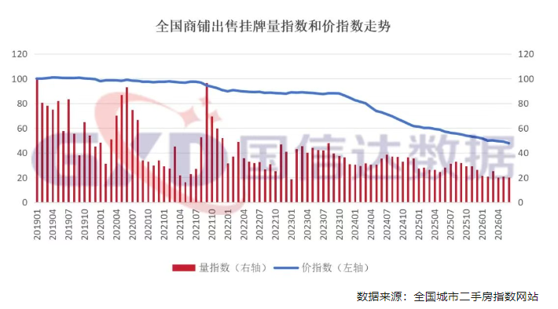
一句话核心： 用来做生意的"商铺"资产，卖价一年跌 16.3%、租金跌 6.77%，而且从高点算已经"腰斩"，说明线下商业的赚钱预期在持续走弱。
背景与关键数据： "挂牌价"= 业主挂出来求售/求租的报价（不是最终成交价，但能领先反映预期）。"环比"是跟上月比，"同比"是跟去年同月比。6 月商铺售价环比 -2.49%、同比 -16.3%，租金环比 -1.33%、同比 -6.77%。Jason 补的那句"与基数相比腰斩"，是指从指数高点算已跌去约一半。
图片解读： 图 1 是"全国商铺出售挂牌量指数（红柱，右轴）和价指数（蓝线，左轴）走势"，横轴 2019 年至 2026 年。**蓝线（价）**在 2019–2023 年一直平稳贴在 100 附近，从 2024 年起加速下滑，到 2026 年中掉到约 45——这就是"腰斩"的直观来源。红柱（成交/挂牌量）一路萎缩且忽高忽低，说明不仅价在跌、活跃度也在降。
为什么重要 / 对市场和经济的含义： 商铺价格本质是"这个铺子未来能收多少租金"的贴现。铺价腰斩=市场认定线下零售、餐饮的现金流长期变差（电商挤压 + 消费降级）。它直接砸的是持有商业地产的开发商、REITs 和以商铺抵押的银行贷款，也印证内需疲弱这条大逻辑。
延伸知识 —— 为什么"挂牌价"比"成交价"更早说真话？ 成交价有滞后性：市场差的时候，卖不掉的房子干脆不成交，成交样本反而偏向"愿意降价的好房源"，容易失真。而挂牌价反映的是当下所有卖家的心理预期，跌得早、跌得诚实。看楼市/铺市拐点，专业投资者往往先盯挂牌量（供给压力）和挂牌价，而不是滞后的成交均价。
第 2 篇 · 15:01 · 中概"坏消息即好消息"？（伯恩斯坦） #股市
帖子原文：
伯恩斯坦：2026年上半年，我们覆盖的中国互联网公司平均下跌约16%。股价下跌同时来自两个方面：盈利预测被下调；估值倍数被压缩。当市场已经把"消费疲弱、AI烧钱、监管风险、竞争加剧"等悲观因素计入价格后，新的坏消息只要没有继续恶化，就可能被市场视为利好。#股市
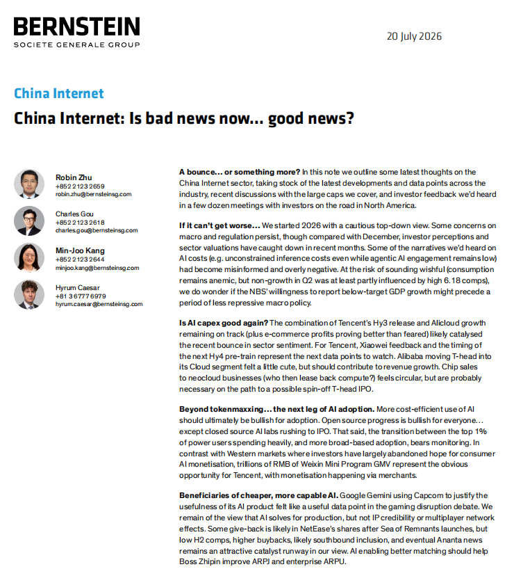
一句话核心： 中概互联网上半年平均跌 16%，但坏消息已经跌"到位"了，接下来只要不再更坏，市场就可能反弹——这是典型的"预期见底"逻辑。
背景与关键数据： 股价 = 每股盈利（EPS）× 估值倍数（PE）。上半年这两个因子"戴维斯双杀"：盈利预测被下调（分子变小）+ 估值被压缩（乘数变小），所以跌 16%。伯恩斯坦点名四大利空已被"计入价格"：消费疲弱、AI 烧钱、监管风险、竞争加剧。
图片解读： 图 1 是伯恩斯坦（Bernstein / 法国兴业集团）2026 年 7 月 20 日的研报首页《China Internet: Is bad news now… good news?》。要点：他们年初对中概是谨慎的"自上而下"看空；但注意到 Q2 消费虽弱，部分是被去年"6·18"高基数拖累；还提到"国家统计局愿意报出低于目标的 GDP，或许预示宏观政策会转向不那么压制"。并看好腾讯微信小程序数万亿 GMV 的变现空间。
为什么重要 / 对市场和经济的含义： "坏消息即好消息"是熊市转折的经典前兆——当所有人都悲观、利空出尽，边际上的"没那么差"就足以推动反弹。这与第 11 篇高盛看人民币升值、第 6 篇国家队入场，共同拼出一个"中国资产可能在筑底"的图景。
延伸知识 —— 什么叫"戴维斯双杀 / 双击"？ 股价同时被 EPS 和 PE 两个变量放大：都跌就是"双杀"（跌得比基本面还狠），都涨就是"双击"（涨得比基本面还猛）。它解释了为什么股市波动常常远大于经济波动——因为情绪（估值倍数）会和盈利叠加共振。理解这一点，就能明白"跌到位"往往不是等基本面变好，而是等估值先跌无可跌。
第 3 篇 · 15:08 · 居民不借钱了，政府只能加杠杆（自制图表） #自制图表
帖子原文：
用尽居民部门+地方隐债两张信用卡后， 显性债务只能中枢向上 #自制图表
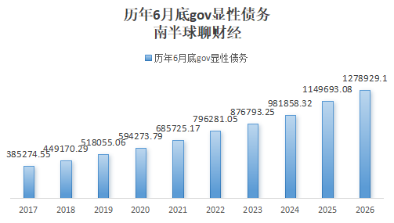
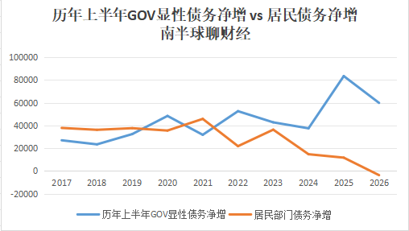
一句话核心： 过去靠"居民买房加杠杆 + 地方隐性债务"两张信用卡撑起来的信用扩张已经刷爆，现在只能靠中央/政府的"显性债务"顶上来，而且这个规模只会越来越大。
背景与关键数据： "信用扩张"是现代经济增长的燃料——总得有人借钱花，经济才转得动。过去中国主要靠两个借钱主体：① 居民买房（房贷）；② 地方政府通过融资平台搞的"隐性债务"。这两张"信用卡"如今都刷到上限（房子卖不动、地方化债），于是接力棒交到"显性债务"（国债、地方专项债这类摆在明面上的政府债）手里。
图片解读：
- 图 1（历年 6 月底政府显性债务）：柱状图，2017 年约 38.5 万亿，逐年抬升到 2026 年约 127.9 万亿，且斜率越来越陡——显性债务在加速扩张。
- 图 2（历年上半年 政府显性债务净增 vs 居民部门债务净增）：两条线最能说明问题。**蓝线（政府净增）**从 2017 年约 2.7 万亿一路冲到 2025 年约 8.4 万亿的高点；**橙线（居民净增）**却从 2017–2021 年的约 3.5–4.7 万亿，一路下滑到 2024 年约 1.5 万亿、2025 年更低，到 2026 年跌破零变成净减少（居民在净还债）。一升一降的剪刀差，正是"政府接棒居民加杠杆"的铁证。
为什么重要 / 对市场和经济的含义： 居民债务净增转负 = 全社会最大的借钱主体开始"缩表"，这会拖累消费和地产（钱都拿去还贷了）。要防止信用总量塌缩引发通缩螺旋，政府必须逆势加杠杆（发债搞基建、补贴、化债）。这解释了为什么财政要发力、为什么利率要压低、也是"低通胀"格局的根源。对债市：政府债供给放量；对股市：财政托底是主线支撑。
延伸知识 —— 辜朝明的"资产负债表衰退"。 当一国居民/企业经历资产价格暴跌后，即使利率降到很低，大家也不愿再借钱，而是拼命还债、修复资产负债表——货币政策因此"推绳子"般失效，唯有政府接手借钱花，才能填补需求缺口。日本 1990 年代就是范本。图 2 里"居民净增转负、政府净增顶上"的形态，正是这个理论的现实投影。
第 4 篇 · 15:12 · AI/动量股暴跌只是"换挡"不是熊市（摩根大通） #金融
帖子原文：
JPM：过去几周AI、半导体和动量股的大幅调整，主要是一次拥挤交易解除和市场风格轮动，而不是全球股市新一轮持续下跌的开始。其核心配置建议是：全球股票整体仍然超配；继续逢地缘政治冲突造成的下跌买入；看好市场从少数AI龙头向更广泛周期股扩散；区域上超配新兴市场和欧元区；行业上超配半导体、资本品、矿业和建筑材料；回避被AI侵蚀商业模式的软件、商业服务和媒体；对能源股维持低配。#金融
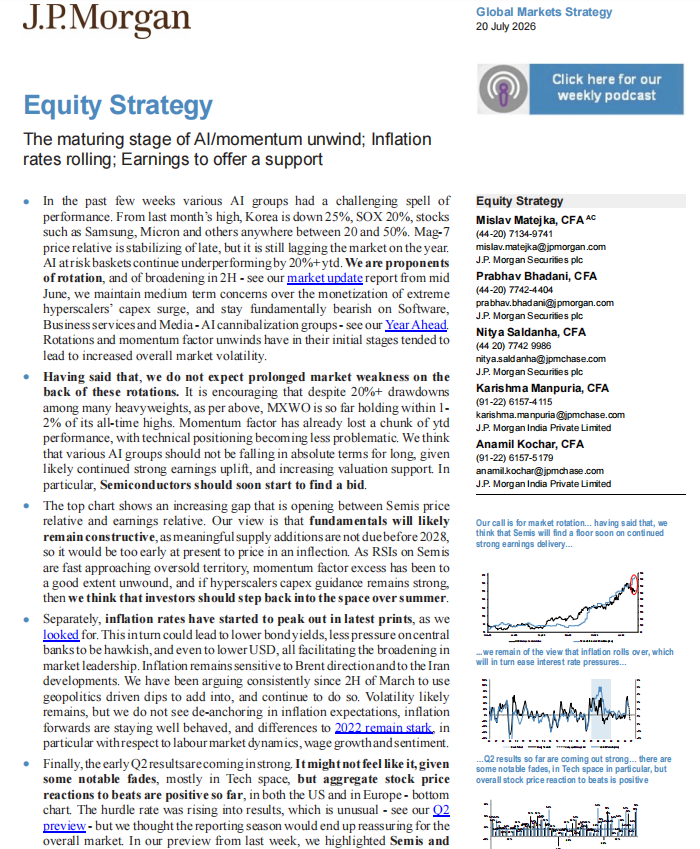
一句话核心： 摩根大通认为 AI 和半导体这轮 20%+ 的暴跌是"拥挤交易解除 + 风格轮动"，不是全球熊市，建议继续持股、逢地缘低点买入，并从"少数 AI 龙头"轮动到更广的周期股。
背景与关键数据： "拥挤交易"= 太多人押注同一方向（都买 AI 龙头），一旦有人先跑，踩踏式回撤就会放大。研报里的数据：从上月高点算，韩国股市跌 25%、费城半导体指数（SOX）跌 20%、三星/美光等个股从高点回撤 20–50%。但摩根大通强调 MXWO（全球指数）距历史高点只回撤 1–2%，说明是"内部轮动"而非"全盘下跌"。
图片解读： 图 1 是摩根大通 2026 年 7 月 20 日《Equity Strategy》研报首页，副标题"AI/动量解除进入成熟阶段；通胀见顶回落；财报提供支撑"。右侧三张小图分别对应：半导体股价相对盈利的缺口（估值消化）、通胀见顶将缓解加息压力、Q2 财报对"超预期"的正面反应。核心判断：半导体基本面仍稳（供给要到 2028 年后才补上），回调是加仓机会。
为什么重要 / 对市场和经济的含义： 这条给了投资者一个"别恐慌"的框架：AI 泡沫式集中→分散到周期股，是健康的再平衡而非崩盘。配置含义清晰：超配半导体、资本品、矿业、建材、新兴市场、欧元区；回避会被 AI"吃掉"的软件/商业服务/媒体（与第 14 篇大摩的行业分化判断完全呼应）。
延伸知识 —— 什么是"风格轮动"（rotation）？ 市场资金在不同板块/风格间搬家，比如从"成长股（AI 龙头）"转向"价值/周期股（矿业、资本品）"。轮动往往发生在某个板块涨太多、太拥挤之后。它不改变大盘方向，却会让"指数没怎么动、但你持仓的个股天翻地覆"。看懂轮动，才不会在指数微跌时被个股 20% 的回撤吓到割肉在底部。
第 5 篇 · 15:25 · 修不起高铁的美国，为何能盖顶级球场？（FT / 长文思辨） #其他国家经济
帖子原文：
FT：修不起高铁的美国，为何能盖出顶级球场？#其他国家经济
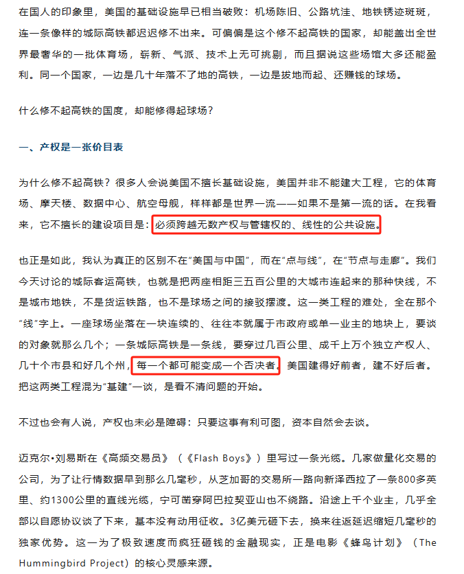
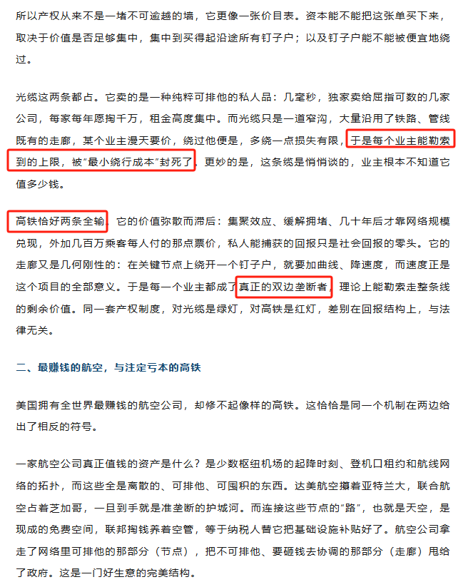
一句话核心： 一篇从"产权结构"解释美国建设能力的思辨长文——美国盖得起孤立的"点"（球场、机场、摩天楼），却修不起要穿越千百个产权人的"线"（城际高铁），差别不在能力，而在产权谈判成本。
背景与关键数据： 文章核心命题："产权是一张价目表"。一座球场坐落在一块连片地上，谈判对象就那么几个；一条城际高铁要穿过几百公里、成千上万独立产权人、几十个市县、好几个州——每一个都可能变成"否决者"。球场是"点"，好谈；高铁是"线"，任何一个钉子户都能卡住全线（绕路就要加曲线、降速，而速度正是高铁的全部意义）。
图片解读： 6 张图是这篇长文的连续截图。图 1–2 展开两个论点：① "产权是价目表"——资本愿不愿意买单，取决于价值是否足够集中；② 用《高频交易员》(Flash Boys) 里的案例佐证：几家量化公司为抢几毫秒优势，沿既有铁路/管线走廊，硬砸 3 亿美元拉了一条 1300 公里的直线光缆（因为光缆价值极度集中、能勒索到每个业主的上限）；而高铁价值弥散、回报是"社会的"，私人捕获不到，于是"同一套产权制度，对光缆是绿灯，对高铁是红灯"。文中还引出"最赚钱的航空 vs 注定亏本的高铁"：航空公司占住稀缺的"节点"（机场时刻），而"走廊"（天空）是纳税人免费补贴的公共品——所以航空是完美生意，高铁是赔本买卖。
为什么重要 / 对市场和经济的含义： 这篇不谈某只股票，而是给"为什么中美基建能力差异巨大"提供了制度经济学视角。它提醒投资者：判断一国能不能推动大型基建（新能源电网、高铁、数据中心走廊），关键看产权是集中还是分散、审批是"点式"还是"线式"。这也间接解释了中国"集中力量办大事"在线性基建上的效率优势。
延伸知识 —— "反公地悲剧"(Tragedy of the Anticommons)。 经典的"公地悲剧"是产权太分散导致资源被过度使用；而"反公地悲剧"相反：当一项资源被太多人分别持有"否决权"，任何一个人都能阻止使用，结果资源被闲置、大项目做不成。城际高铁穿越无数产权人，正是"反公地悲剧"的典型——太多否决者，好事办不成。理解它，就懂了为什么"产权清晰"有时反而会卡住公共工程。
第 6 篇 · 15:46 · 国家队一年来最大力度托市（南华早报 / 彭博） #A股
帖子原文：
南华早报：国家队托市 #A股
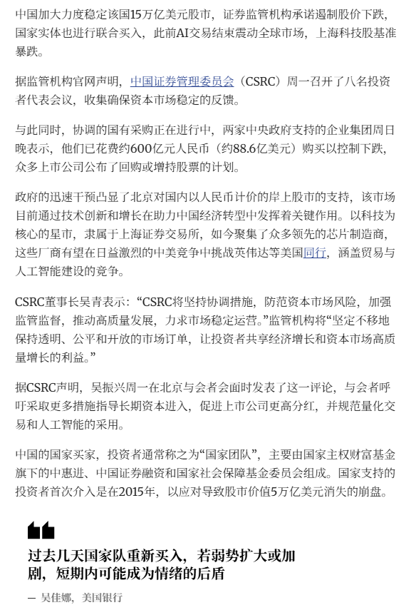
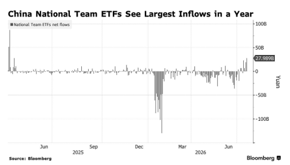
一句话核心： 面对 AI 交易解除引发的科技股暴跌，中国"国家队"重新大举买入 ETF，出现一年来最大单周净流入，证监会同步喊话稳市场。
背景与关键数据： "国家队"= 主权财富基金/中央汇金、证金公司、社保基金等国家背景的投资者，2015 年股灾时首次大规模入场。这次背景是"上海科技股（芯片股）随全球 AI 交易解除而暴跌"。据报道，两家中央政府支持的企业集团已花费约 **600 亿元人民币（约 88.6 亿美元）**买入护盘，众多公司公布回购/增持计划；证监会主席吴青表态"坚决防范资本市场风险、力求稳定运营"。
图片解读：
- 图 1 是南华早报报道正文，结尾引用美银（BofA）吴佳娜的判断："过去几天国家队重新买入，若弱势扩大或加剧，短期内可能成为情绪的后盾。"
- 图 2 是彭博图表《China National Team ETFs See Largest Inflows in a Year》：柱状图为国家队 ETF 单期净流入（单位人民币元），2025 年 12 月至 2026 年 3 月曾出现巨额净流出（负柱一度接近 -1000 亿），而最新一根柱子飙到 +279.89 亿，是一年来最大单周净流入。
为什么重要 / 对市场和经济的含义： 国家队入场是政策底的信号——它未必让股市马上大涨，但能给"情绪当后盾"，防止踩踏。结合第 3 篇"财政加杠杆"、第 2 篇"中概坏消息出尽"、第 11 篇"高盛看人民币升值"，多条线都指向"官方在给中国资产筑底"。
延伸知识 —— "政策底 → 市场底 → 经济底"的三段论。 A 股常见的见底顺序：先有"政策底"（官方开始救市/放松），再有"市场底"（股价止跌回升），最后才是"经济底"（基本面数据企稳）。国家队入场通常标志"政策底"确认，但从政策底到市场底往往还有反复磨底的过程（参见第 2 篇伯恩斯坦说的"筑底"）。所以看到国家队买入不必追高，但可视作风险偏好的重要拐点信号。
第 7 篇 · 15:50 · 欧洲 60 年财政顺风正在逆转（摩根士丹利） #其他国家经济
帖子原文：
摩根斯坦利：欧洲过去60年享受的财政顺风正在逆转。过去几十年，欧洲政府能够持续扩大社会福利，主要得益于三股顺风：经济持续增长；冷战结束后国防支出长期下降；通胀和利率趋势性下降，债务利息负担减轻。如今，这三股顺风正在部分逆转：劳动年龄人口减少，退休人口增加；欧洲需要提高国防支出；政府债务利率明显高于过去十余年的超低水平；社会保障支出已经很高，而且政治上难以削减。到2040年，老龄化、国防和利息支出可能令多数欧洲国家新增相当于GDP约3个百分点的财政需求；西班牙和葡萄牙的压力可能超过5个百分点。这意味着欧洲未来的财政问题不是简单的"赤字太高"，而是必须在养老金、医疗、国防、利息支出、公共投资和税收之间重新分配有限的财政资源。我们认为，突然实施大规模财政紧缩并不可取。较现实的方案是维持部分实际支出冻结，同时通过提高经济增长率，让支出占GDP的比例自然下降。#其他国家经济
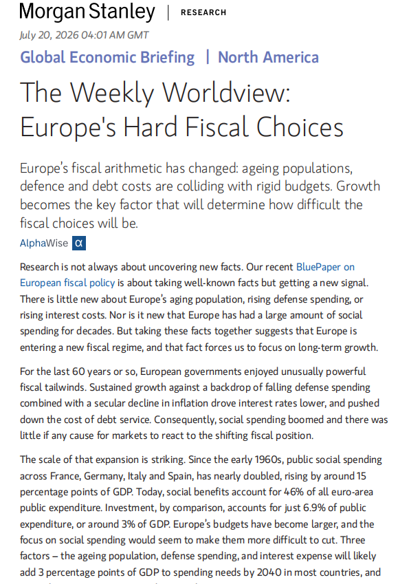
一句话核心： 欧洲过去 60 年靠"增长强、国防省、利率降"三股顺风撑起高福利，如今这三股风全都转向，逼欧洲在养老、医疗、国防、还息之间做痛苦取舍。
背景与关键数据： "财政顺风"= 让政府花钱更轻松的结构性因素。过去三条：① 经济持续增长（税收自动多）；② 冷战后国防开支长期下降（省下的钱转福利）；③ 通胀和利率趋势性下行（借新还旧的利息越来越低）。现在三条全逆转：人口老龄化（干活的人少、领养老金的人多）、国防要重新加钱（地缘紧张）、利率抬升（利息负担变重）。研报测算：到 2040 年，光是老龄化+国防+利息三项，就会给多数欧洲国家新增约 3 个百分点 GDP 的财政需求，西班牙、葡萄牙超 5 个百分点。
图片解读： 图 1 是摩根士丹利 2026 年 7 月 20 日《The Weekly Worldview: Europe's Hard Fiscal Choices》。补充数据：自 1960 年代以来，法德意西的公共社会支出占 GDP 已近乎翻倍、上升约 15 个百分点；如今社会福利占欧元区公共支出的 46%，而投资只占 6.9%（约 3% GDP）。结论：欧洲进入"新财政体制"，突然大紧缩不可取，现实解是"冻结部分实际支出 + 靠提高增长率稀释支出占比"。
为什么重要 / 对市场和经济的含义： 欧洲的财政困局意味着：① 政府债供给长期偏多、欧债利率难大降；② 增长成了唯一解药，会倒逼欧洲搞结构性改革和国防/产业投资（利好资本品、军工，呼应第 4 篇摩根大通"超配欧元区"）；③ 高福利刚性 + 加税压力，对欧洲消费和企业盈利是中期逆风。
延伸知识 —— "债务的雪球效应"(snowball effect)。 当政府债务的平均利率 > 名义经济增速时，光是"还利息"就会让债务/GDP 自动往上滚，越滚越大，需要更多财政盈余才能稳住——这就是欧洲最怕的场景。反之若增速 > 利率，债务负担会被增长"稀释"掉。这也是为什么摩根士丹利强调"靠提高增长率让支出占比自然下降"——在雪球效应下，增长比紧缩更能救命。
第 8 篇 · 16:05 · 红海封锁把油价顶上高位（zerohedge） #金融
帖子原文：
zerohedge：美军延续连续第十天的袭击，胡塞武装引发了红海升级的恐慌，石油价格接近自六月中旬以来的最高收盘价——对股票和债券造成压力 #金融
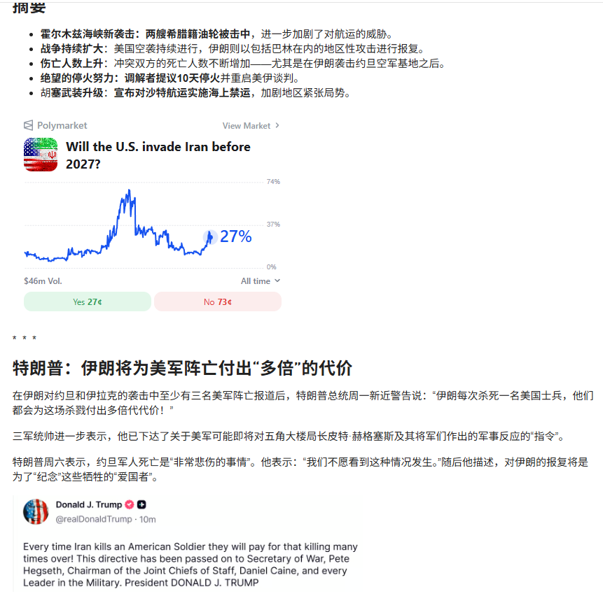
一句话核心： 美伊冲突进入第 10 天、胡塞武装升级红海袭击，油价逼近 6 月中旬以来最高，同时压制股票和债券。
背景与关键数据： 冲突要点（图 1 汇总）：霍尔木兹海峡两艘希腊籍油轮被击中；美国空袭持续；冲突双方死亡人数持续上升（尤其伊朗袭击约旦美军基地后）；调解者提议 10 天停火并重启美伊谈判；胡塞武装宣布对沙特航运实施海上禁运。油价被顶到 6 月中旬以来高位。
图片解读： 本帖共 9 张图，图 1 是核心——除冲突要点清单外，最关键的是 Polymarket 预测市场"美国会在 2027 年前入侵伊朗吗"的走势：曾冲高到 74% 附近，目前回落到 27%（Yes 27 美分、No 73 美分），成交量 4600 万美元。旁边还有特朗普的推文与警告："伊朗每次杀死一名美国士兵，都会为此付出多倍代价。"其余 8 张为相关新闻/图片佐证。
为什么重要 / 对市场和经济的含义： 三条传导链：① 油价→通胀：霍尔木兹是全球约 1/5 原油必经水道，红海+霍尔木兹双封锁会推升油价，进而顶住美国 CPI、也可能让中国 PPI 二次回升；② 避险情绪：地缘升级利好黄金/美元/美债、利空风险资产（原文说"对股债都造成压力"）；③ 尾部风险定价：Polymarket 从 74% 回落到 27%，说明市场认为"全面开战"概率在下降，但仍是悬顶之剑。
延伸知识 —— 为什么油价能同时压股票和债券？ 通常"股债跷跷板"——避险时资金从股票流向债券、债价涨。但油价驱动的是"滞胀式冲击"：油涨→通胀预期升→央行更难降息甚至要加息→债券利率上行、债价跌；同时成本上升挤压企业利润、股价也跌。于是股债同跌，这正是 2022 年式的"滞胀交易"，也是投资者最难对冲的环境（连传统的"债券避险"都失灵）。
第 9 篇 · 16:08 · 外资打折甩卖中国商业地产（KKR、AEW / 彭博） #经济数据
帖子原文：
bloomberg：KKR、AEW寻求出售中国地产资产，过去15年中，外国买家在中国的办公楼、仓库、购物中心和数据中心投资了近1400亿美元。但随着前所未有的供应过剩导致租金和房价暴跌，这些市场大多转为卖出模式。去年，以渣打银行为首的贷款机构在上海一处此前由贝莱德基金拥有的办公楼群以超过40%的折扣出售，损失超过10%。#经济数据
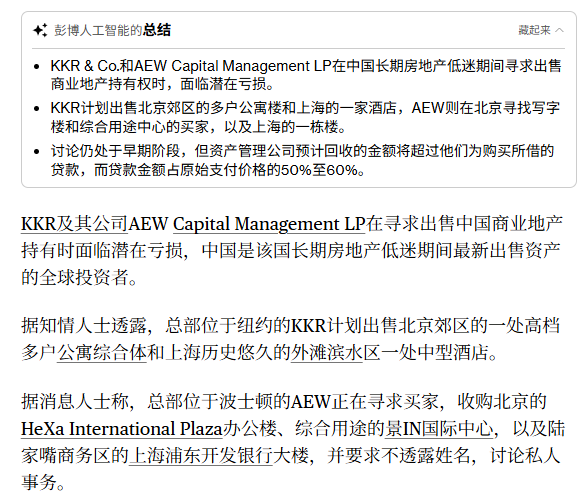
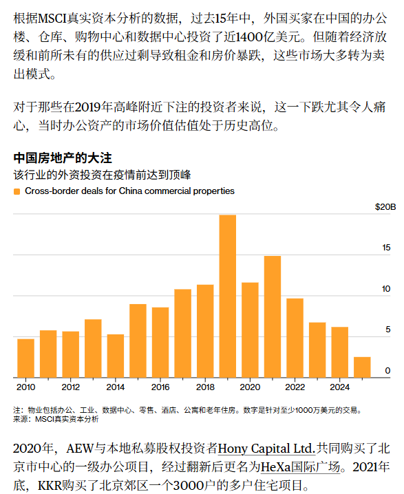
一句话核心： 顶级外资机构（KKR、AEW）正打折甩卖手里的中国商业地产，过去 15 年外资在华投的近 1400 亿美元大多转为"卖出模式"，部分资产折价超 40%。
背景与关键数据： 过去 15 年，外国买家在中国的写字楼、仓库、购物中心、数据中心投了近 1400 亿美元。如今供应过剩→租金和房价暴跌→外资转为卖方。案例：去年以渣打为首的贷款机构，把上海一处原贝莱德基金持有的办公楼群以 超 40% 折扣出售，仍损失超 10%。KKR（纽约）计划卖北京郊区高档公寓综合体 + 上海外滩滨水中型酒店；AEW（波士顿）在给北京 HeXa 国际中心、景 IN 国际中心和上海浦发银行大楼找买家，预计回收金额仅为当初买入借款的 50%–60%。
图片解读： 图 1 是彭博 AI 摘要 + 报道正文，列出 KKR/AEW 的具体待售资产与"回收仅为原借款 50–60%"的估算。图 2 为配套报道。核心信号：连专业外资也在"割肉离场"，且接盘价打对折。
为什么重要 / 对市场和经济的含义： 商业地产是银行抵押品和地方财政的重要底盘。外资打对折甩卖，等于给中国商业地产重新"定价打折"，会拖累持有类似资产的银行、险资和 REITs 的估值（与第 1 篇商铺腰斩互为印证）。同时这也是"资本流出旧经济（地产）"的缩影——但注意，第 11 篇高盛却看人民币升值，说明资本在"撤出地产"的同时可能"流入股票/新经济"，是结构切换而非全面撤离。
延伸知识 —— "机会型基金"(opportunistic fund) 的顺周期宿命。 KKR、AEW 这类基金往往在市场火热时高杠杆买入商业地产、指望几年后增值退出。一旦周期反转、租金下跌+利率上升，资产价值跌破贷款，就会被迫在最差的时点卖出（因为基金有存续期限、要给 LP 兑付）。这就是"顺周期"——涨时追高、跌时割肉，反而放大了地产周期的波动。看到大牌基金集体甩卖，通常意味着这一轮出清接近尾声、但也说明底部还在寻找中。
第 10 篇 · 16:13 · 欧盟被迫兑现 1.35 万亿美元对美投资（彭博） #其他国家经济
帖子原文：
bloomberg：欧盟预计将实现去年与特朗普达成的贸易协议中设定的1.35万亿美元投资目标。欧盟将在能源采购方面实现7500亿美元，并在美国战略领域投资6000亿美元。欧盟委员会数据显示，去年欧美双边商品和服务贸易增长约4.5%，达到1.8万亿欧元。美国对欧盟进口的有效关税率从1%提升至8%，导致美国进口商需支付310亿欧元的额外关税，而协议前为70亿欧元。#其他国家经济
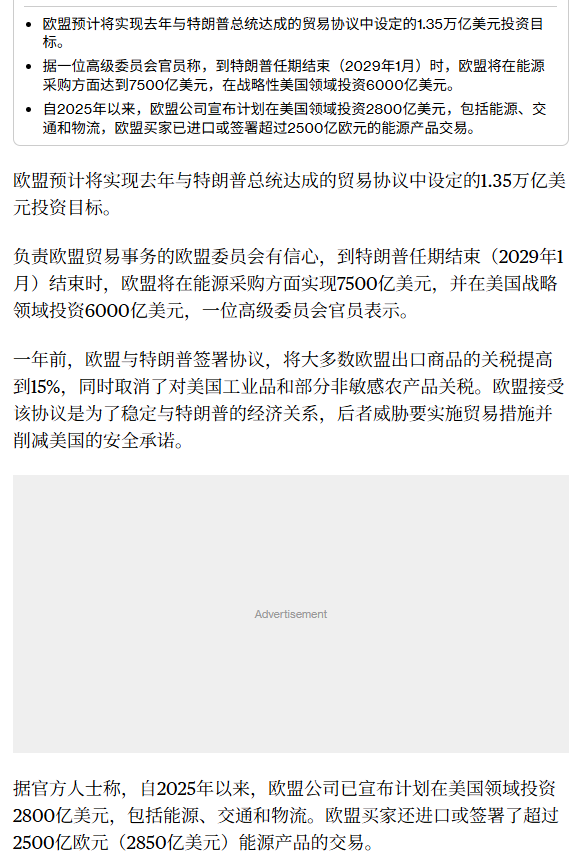
一句话核心： 欧盟为兑现去年与特朗普签的贸易协议，将向美国采购 7500 亿美元能源、再投 6000 亿美元战略领域（合计 1.35 万亿美元），同时美国对欧盟商品的有效关税从 1% 提到 8%。
背景与关键数据： 去年欧美贸易协议的两大对价：① 欧盟对美追加投资承诺 1.35 万亿美元（7500 亿能源采购 + 6000 亿战略投资），到特朗普任期结束（2029 年 1 月）前完成；② 作为交换，美国把对欧盟进口的有效关税率从 1% 提到 8%——这让美国进口商多付的关税从协议前的 70 亿欧元暴增到 310 亿欧元。去年欧美双边商品+服务贸易增长约 4.5%、达 1.8 万亿欧元。
图片解读： 图 1 是彭博报道的中文转译，列出上述数字，并说明自 2025 年以来欧盟企业已宣布对美投资 2800 亿美元（含能源、交通、物流），还进口/签约了超 2500 亿欧元能源产品。
为什么重要 / 对市场和经济的含义： 这是"关税换投资"式的产业与资本再分配：美国用关税逼欧盟把钱和产业往美国搬（尤其能源采购=买美国 LNG/原油）。含义：① 利好美国能源出口和承接投资的美国本土产业；② 关税成本最终由美国进口商/消费者部分承担（这也是通胀黏性来源之一）；③ 加重欧洲企业负担，与第 7 篇"欧洲财政困局"叠加，是欧洲竞争力的中期逆风。
延伸知识 —— "关税的归宿"(tax incidence)：到底谁在买单？ 教科书结论：关税名义上向进口商征收，但实际负担会在"进口商、出口国厂商、本国消费者"之间分摊，具体比例取决于供需弹性。数据里"美国进口商多付 310 亿欧元关税"就是直接证据——很大一部分关税成本落在了美国自己身上，并可能转嫁为更高的终端物价。这解释了为什么"加关税"往往是一把双刃剑：既保护本土产业，又推高本国通胀。
第 11 篇 · 16:29 · 高盛预测人民币升值到 6.50（高盛 FX 预测） #金融
帖子原文：
高盛算命 #金融
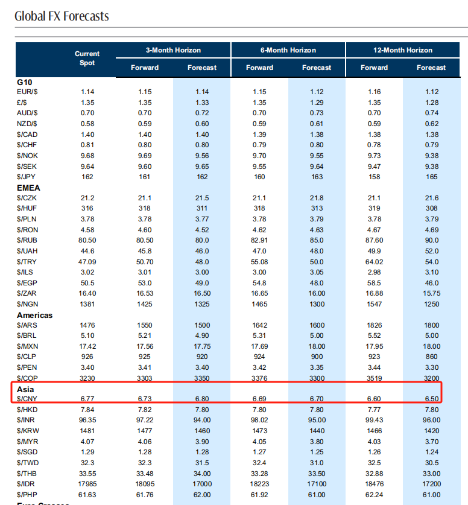
一句话核心： 高盛最新全球汇率预测里，人民币（USD/CNY）当前 6.77，未来 3/6/12 个月预测为 6.80 / 6.70 / 6.50——即中期看人民币升值。
背景与关键数据： "算命"是 Jason 对券商汇率预测的戏称（谁也测不准，但能看它押哪边）。USD/CNY 的数字越小=人民币越强。高盛给的路径：现价 6.77 → 3 个月 6.80（略贬）→ 6 个月 6.70 → 12 个月 6.50（明显升值）。表里还能看到 USD/HKD 稳在 7.84（联系汇率）、USD/JPY 约 162、美元对多数新兴市场货币的预测。
图片解读： 图 1 是高盛《Global FX Forecasts》汇率预测表，覆盖 G10、EMEA、美洲、亚洲各币种的现价与 3/6/12 个月远期（Forward）和高盛预测（Forecast）。红框圈出的正是亚洲区 USD/CNY 一行：6.77 → 6.80 → 6.70 → 6.50。
为什么重要 / 对市场和经济的含义： 这是今天最耐人寻味的信号。中国明明在"降息、加财政杠杆、需求偏弱"，通常这些都对应货币走弱；但高盛却看人民币升值。可能的逻辑：① 美元自身走弱（美联储加息预期若落空、或美国财政/经常账户恶化）；② 资本回流中国资产（中概筑底+国家队入场+估值便宜）；③ 中国经常账户顺差仍强、出口"抢跑"。人民币走强会：利好以人民币计价的中国资产（吸引外资）、压低进口成本、但对出口商是逆风。
延伸知识 —— "远期汇率" vs "预测汇率"，别看混了。 表里 Forward（远期）是市场用两国利差算出来的"无套利定价"，不代表任何人对未来的判断，只反映"利率平价"（利率高的货币远期贴水）。而 Forecast（预测）才是高盛真人分析师押的方向。当 Forecast 明显强于 Forward（如 12 个月 6.50 < 远期 6.60），意味着高盛认为人民币会比"利率平价隐含的水平"更强——这是一个主动看多人民币的表态，值得留意。
第 12 篇 · 16:57 · 外资仍在疯抢美债美企债（花旗） #金融
帖子原文：
花旗：2026年5月海外投资者对美国固定收益资产的需求依然强劲，而且买入范围很广：海外投资者净买入约 579亿美元美国发行人企业债，创2024年3月以来最高；经估值调整后，外国投资者增持约 1160亿美元长期美国国债；同时减持约 435亿美元短期国库券，反映部分资金正在延长久期；外国投资者净买入约 180亿美元机构MBS；2026年前五个月，海外资金已吸收约一半的美国企业债净供给。国债角度，2026年外国购买主要由欧洲推动，而日本和中国贡献相对有限。但这里需要谨慎解释，TIC数据往往按照托管地记录，而不是最终所有者所在地。也就是说卢森堡和比利时不一定是最终投资者，很可能包括中国的资金。#金融
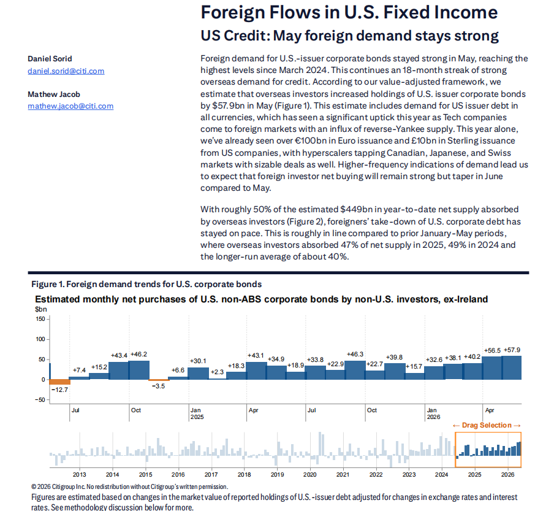
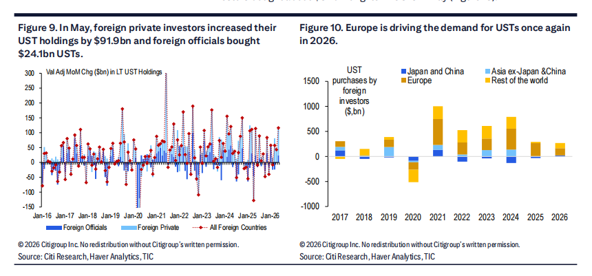
一句话核心： 2026 年 5 月海外投资者继续大买美国债券——净买 579 亿美企债（2024 年 3 月来最高）、增持 1160 亿长期美债，前 5 个月吸收了约一半的美企债净供给，主力是欧洲。
背景与关键数据： 关键动作：① 净买美企债约 579 亿美元（2024 年 3 月来最高）；② 估值调整后增持长期美债约 1160 亿美元；③ 减持短期国库券约 435 亿（说明资金在"拉长久期"——押注利率见顶）；④ 净买机构 MBS 约 180 亿；⑤ 2026 前 5 个月，外资吸收了约 50% 的美企债净供给（2025 年 47%、2024 年 49%、长期均值约 40%）。地域上欧洲主导，日本和中国"贡献有限"。
图片解读：
- 图 1 是花旗《Foreign Flows in U.S. Fixed Income》研报：Figure 1 显示外资月度净买美企债，最新一根 +57.9 亿美元/月（图中标注为近月连续正流入，柱体越垫越高）。
- 图 2 的 Figure 9 显示 5 月外国私人投资者增持 919 亿美债、官方增持 241 亿；Figure 10《Europe is driving the demand for USTs again in 2026》用分地区堆叠柱显示——欧洲（橙）是 2026 年美债需求的主力，日本+中国（蓝）占比很小。
为什么重要 / 对市场和经济的含义： 外资持续抢美债，说明"美元资产避险地位"暂时未动摇，这给美债利率提供了下行支撑（需求强→价格高→收益率被压）。但花旗提醒的那句最关键：TIC 数据按"托管地"而非"最终所有者"记账——卢森堡、比利时的买盘里很可能藏着中国资金。也就是说，"中国减持美债"的表象下，可能只是换了个托管通道，实际敞口未必真降。
延伸知识 —— "拉长久期"(extending duration) 是在赌什么？ 久期越长的债券，对利率变化越敏感（利率跌 1%，长债涨得比短债多）。外资"减持短债、增持长债"，等于押注"利率见顶、未来要降"——因为一旦降息，锁定在长债上的高票息会更值钱、还能吃到价格上涨的资本利得。所以这个仓位变化本身就是一个市场观点：大钱认为加息周期接近尾声。这也和第 4 篇"通胀见顶"、第 11 篇"美元走弱"隐隐呼应。
第 13 篇 · 16:59 · 连"延迟毕业"这条退路都在贬值（自制图表） #自制图表
帖子原文：
延迟毕业含金量↓ #自制图表
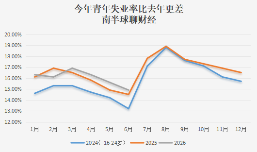
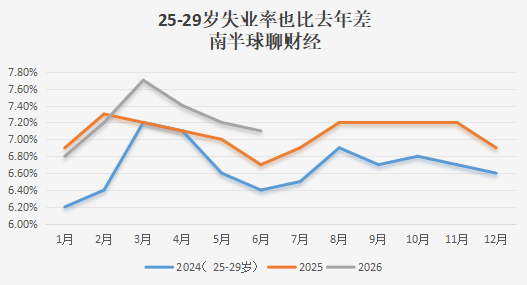
一句话核心： 青年失业率一年比一年高，连"晚点毕业、等经济好转再就业"这条常见退路也在失效——因为"延迟毕业"的那批人变老进入 25–29 岁后，失业率同样比往年更差。
背景与关键数据： "延迟毕业含金量↓"的意思：很多学生在就业差时选择考研/延毕、推迟进入职场，指望"熬过寒冬"。但两张图说明，无论是 16–24 岁还是 25–29 岁，2026 年的失业率曲线都高于往年——这条"以时间换空间"的策略正在贬值。
图片解读：
- 图 1（16–24 岁青年失业率）：三条线分别是 2024（蓝）、2025（橙）、2026（灰）。2026 年灰线在 1–6 月全程最高（约 16%–17%），明显高于 2025 橙线、远高于 2024 蓝线；季节性看 7–8 月（毕业季）会冲到约 19% 的年内高点。
- 图 2（25–29 岁失业率）：同样 2026 灰线最高（3 月一度冲到约 7.7%），压在 2025 橙线之上、2024 蓝线更低。关键信号：当年"延迟毕业"的人如今进入 25–29 岁，本该更好就业，失业率却也创新高——退路失灵。
为什么重要 / 对市场和经济的含义： 青年失业是内需疲弱的"人力版"证据：找不到工作→没收入→不敢消费/不敢买房/不敢借钱（正好对应第 3 篇"居民债务净增转负"）。它还有社会与政策含义——高青年失业会倒逼政府在就业、财政补贴上加码。对市场：印证"消费降级、地产磨底"的中期逻辑，也是"低通胀"的深层原因（需求不足）。
延伸知识 —— "疤痕效应"(scarring effect)。 劳动经济学发现，毕业即遇上就业寒冬的一代人，往往会被"打上疤痕"：起薪更低、晋升更慢，这种劣势可能持续 10 年以上，即便后来经济复苏也难完全弥补。这就是为什么"延迟毕业"看似聪明、实则可能只是把疤痕往后推，而不能消除。理解疤痕效应，就懂了高青年失业为什么是"慢性、长期"的宏观拖累，而不只是一时的数据难看。
第 14 篇 · 17:03 · AI 已造成约 5% 的净岗位流失（摩根士丹利） #职业
帖子原文：
摩根斯坦利：我们展开了第二轮企业就业调查。结果显示，AI对就业和生产率的影响已经不再停留在试验阶段：过去12个月，AI导致约12%的岗位被取消；约15%的离职岗位不再补招；另有41%的员工被培训或重新部署。同时创造约22%的新岗位；综合形成约5%的净岗位减少；企业报告AI带来的平均净生产率提升约9.6%。行业上，银行、科技硬件和半导体是AI的净受益者；软件和专业服务则会严重分化，拥有专有数据、嵌入客户流程、渠道优势和定价权的公司更可能保留AI红利，依赖人工、外包和按工时收费的公司更容易受到冲击。#职业
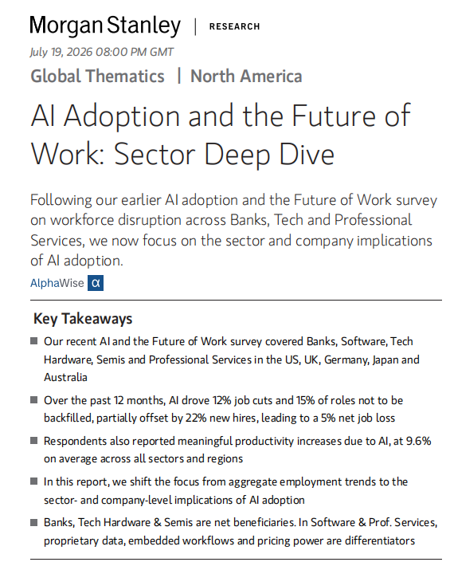
一句话核心： 大摩第二轮企业调查显示，AI 对就业的冲击已从"试验"变成"现实"：过去 12 个月造成约 5% 的净岗位流失、约 9.6% 的净生产率提升，且行业分化剧烈。
背景与关键数据： 拆解那组数字：AI 直接取消约 12% 岗位 + 约 15% 离职岗位不再补招（自然减员），但同时创造约 22% 新岗位、41% 员工被再培训/重新部署——一加一减，净岗位减少约 5%，而净生产率提升约 9.6%（用更少人干更多活）。赢家：银行、科技硬件、半导体；输家/分化：软件与专业服务——有专有数据、嵌入客户流程、有定价权的公司能守住红利；靠人工、外包、按工时收费的公司最受冲击。
图片解读： 图 1 是摩根士丹利 2026 年 7 月 19 日《AI Adoption and the Future of Work: Sector Deep Dive》研报的"Key Takeaways"，逐条列出上述 12%/15%/22%/5%/9.6% 的调查结果，以及"银行、科技硬件、半导体是净受益者"的行业结论。
为什么重要 / 对市场和经济的含义： 这条给"AI 到底改变了什么"提供了可量化的抓手，并直接指导选股：买有定价权/专有数据/嵌入客户流程的公司，避开按工时卖人力的公司——这与第 4 篇摩根大通"回避软件/商业服务/媒体、超配半导体"的配置完全一致。宏观上，"净减 5% 岗位 + 增 9.6% 生产率"是一把双刃剑：利好企业利润率，但加剧就业/收入分配压力。
延伸知识 —— 生产率提升为什么不一定马上涨工资？"生产率-薪酬脱钩"。 过去几十年美国出现过"生产率上升、但普通工人薪酬停滞"的现象——因为效率红利更多流向了资本（利润、股东）而非劳动（工资）。AI 若把生产率一次性抬高 9.6%，红利大概率也先落到有定价权的公司和股东手里，普通岗位反而面临替代压力。这解释了为什么"AI 利好股市（企业盈利）"和"AI 冲击就业（打工人）"可以同时成立——它们分别站在资本和劳动两侧。
第 15 篇 · 17:13 · 巴克莱把中国 GDP 下调到 4.5%（巴克莱） #经济数据
帖子原文：
巴克莱：我们下调对中国今年GDP预测至4.5%，符合目标底线，中国GDP统计更偏生产法，只要工厂增加值保持增长，就能贡献GDP。但我们测算的实际需求指标已经同比下降3.6%。#经济数据
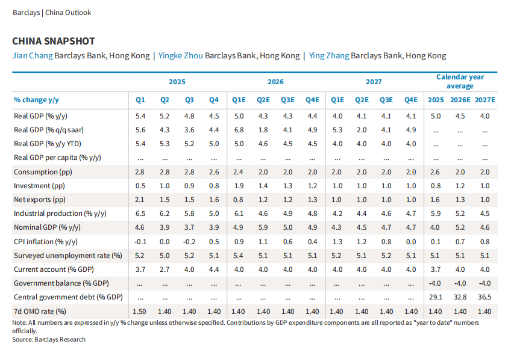
一句话核心： 巴克莱把中国今年 GDP 预测下调到 4.5%（刚好卡在目标底线），并指出一个关键裂缝——官方 GDP 靠"生产法"顶着不难看，但他们测算的"真实需求"其实已同比下降 3.6%。
背景与关键数据： GDP 有三种算法：生产法（看各行业增加值）、支出法（看消费+投资+净出口）、收入法。巴克莱指出中国 GDP 统计更偏"生产法"——只要工厂开工、增加值增长，GDP 就有贡献，即使东西不一定卖得掉。所以会出现"GDP 还有 4.5%，但真实需求 -3.6%"的背离。
图片解读： 图 1 是巴克莱《China Snapshot》季度预测表。关键行：实际 GDP 同比，2025 年四个季度 5.4/5.2/4.8/4.5、2026 年 5.0/4.3/4.3/4.4，全年 2026E 约 4.5%、2027E 约 4.0%；CPI 通胀 2026E 仅 0.7%（低通胀坐实）；调查失业率约 5.1%–5.5%；中央政府债务/GDP 从 2025 年 29.1% 升到 2026E 32.8%、2027E 36.5%（政府加杠杆的官方版印证）；7 天逆回购利率维持 1.40%（宽松）。
为什么重要 / 对市场和经济的含义： "生产强、需求弱"的背离是理解中国经济的钥匙：工厂增加值撑住了 GDP 数字，但需求（-3.6%）才是股价、就业、物价的真实驱动。这解释了为什么"GDP 看着还行，但股市、楼市、物价都偏冷"。低 CPI（0.7%）+ 低利率（1.40%）+ 政府债务占比抬升，三者共同勾勒出"通缩压力下政府加杠杆对冲"的政策组合——与第 3 篇自制图表严丝合缝。
延伸知识 —— "GDP 平减指数"与名义 vs 实际 GDP。 我们常看的"实际 GDP 增速"是剔除物价后的量；但企业利润、税收、还债能力其实更依赖"名义 GDP"（含物价）。当 CPI/PPI 极低甚至通缩时，名义 GDP 增速会明显低于实际增速，导致"经济按实际算还在增长、但按钱算大家都觉得难"。这就是低通胀最隐蔽的伤害——它让实际增速"好看"，却让偿债和现金流"难受"。看中国经济，盯"名义 GDP"往往比"实际 GDP"更贴近体感。
第 16 篇 · 17:19 · 美伊冲突大概率是"可控的不稳定"（杰富瑞） #金融
帖子原文：
杰富瑞：美伊冲突短期不会迎来真正持久和平，但也不太可能立即升级为全面战争。最可能出现的是"可控的不稳定"：有限攻击、短暂停火、再次升级循环往复。霍尔木兹仍很重要，但替代管线和陆路基础设施会逐步降低其长期垄断性；真正的尾部风险是冲突扩散到曼德海峡。对投资者而言，能源股仍有地缘风险支撑，但只有在出口流量、库存和航运出现持续中断时，才应押注长期油价冲击。#金融
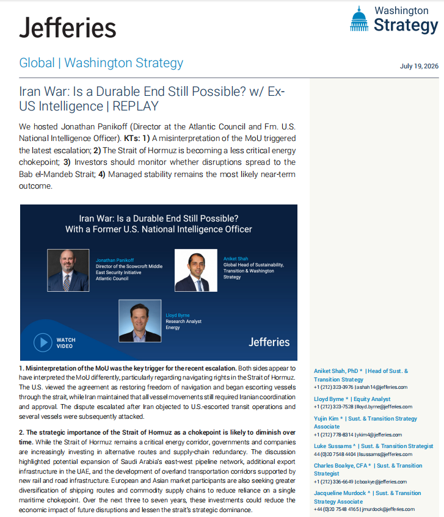
一句话核心： 杰富瑞判断美伊最可能是"可控的不稳定"（有限攻击→短暂停火→再升级的循环），霍尔木兹的战略垄断性会随替代管线下降，真正的尾部风险是冲突蔓延到曼德海峡。
背景与关键数据： 杰富瑞请前美国国家情报官分析，四点结论：① 一份谅解备忘录（MoU）被误读触发了这轮升级；② 霍尔木兹海峡作为能源咽喉的重要性会随时间下降（沙特东西向管线扩建、阿联酋陆路基础设施、绕开单一海上咽喉的运输走廊在增加，未来 3–7 年会削弱其垄断性）；③ 需盯住风险是否蔓延到曼德海峡（红海南口，连接苏伊士运河的另一咽喉）；④ "可控的稳定"是近期最可能的结局。投资建议：能源股有地缘溢价支撑，但只有当出口量、库存、航运出现"持续中断"时，才押注长期油价冲击。
图片解读： 图 1 是杰富瑞（Jefferies）华盛顿策略团队 2026 年 7 月 19 日的《Iran War: Is a Durable End Still Possible?》纪要首页，列出上述四点关键判断（KTs），并配了一段与前情报官的视频访谈。
为什么重要 / 对市场和经济的含义： 这是对第 8 篇"红海油价冲击"的冷静对冲——杰富瑞提醒别把地缘恐慌线性外推：短期油价有溢价，但"全面战争→油价长期暴涨"是小概率，霍尔木兹的咽喉地位也在被替代路线稀释。对投资者的实操是：把地缘当"波动性来源"而非"方向性下注"，除非看到出口/库存/航运的持续性中断，否则不要重仓押长期高油价（这与第 4 篇摩根大通"逢地缘冲突下跌买入"是同一思路）。
延伸知识 —— "咽喉要道"(chokepoint) 的可替代性决定它的溢价。 霍尔木兹、曼德海峡、苏伊士、马六甲、巴拿马运河是全球五大航运咽喉。一个咽喉能给油价多大溢价，取决于它"有没有替代路线"：管线、绕行航线、陆桥越多，封锁的边际杀伤力越小。杰富瑞的核心洞见就是——霍尔木兹正在被替代基础设施"去咽喉化"，所以它对油价的长期定价权在下降。理解这一点，就能在下一次"某海峡告急"的新闻里，快速判断该恐慌几分、该淡定几分。
今日全图索引
| 帖号 | 时间 | 主题 | 标签 | 图片文件 |
|---|---|---|---|---|
| 1 | 14:50 | 全国商铺挂牌价同比腰斩（中指院） | #经济数据 | post1_img1 |
| 2 | 15:01 | 中概"坏消息即好消息"（伯恩斯坦） | #股市 | post2_img1 |
| 3 | 15:08 | 居民不借钱、政府加杠杆（自制图表） | #自制图表 | post3_img1, post3_img2 |
| 4 | 15:12 | AI/动量暴跌是换挡非熊市（摩根大通） | #金融 | post4_img1 |
| 5 | 15:25 | 修不起高铁却盖得起球场（FT 长文） | #其他国家经济 | post5_img1 ~ post5_img6 |
| 6 | 15:46 | 国家队一年来最大力度托市（南华早报/彭博） | #A股 | post6_img1, post6_img2 |
| 7 | 15:50 | 欧洲 60 年财政顺风逆转（摩根士丹利） | #其他国家经济 | post7_img1 |
| 8 | 16:05 | 红海封锁顶高油价（zerohedge） | #金融 | post8_img1 ~ post8_img9 |
| 9 | 16:08 | 外资打折甩卖中国商业地产（KKR/AEW） | #经济数据 | post9_img1, post9_img2 |
| 10 | 16:13 | 欧盟被迫兑现 1.35 万亿对美投资（彭博） | #其他国家经济 | post10_img1 |
| 11 | 16:29 | 高盛预测人民币升值到 6.50 | #金融 | post11_img1 |
| 12 | 16:57 | 外资仍在疯抢美债美企债（花旗） | #金融 | post12_img1, post12_img2 |
| 13 | 16:59 | "延迟毕业"退路也在贬值（自制图表） | #自制图表 | post13_img1, post13_img2 |
| 14 | 17:03 | AI 已造成约 5% 净岗位流失（摩根士丹利） | #职业 | post14_img1 |
| 15 | 17:13 | 巴克莱下调中国 GDP 到 4.5% | #经济数据 | post15_img1 |
| 16 | 17:19 | 美伊冲突大概率"可控的不稳定"（杰富瑞） | #金融 | post16_img1 |
注：图片时间戳为浏览器本地（美西）时区。本报告价格/汇率等数据均来自帖子原图转写，未做外部交叉验证。